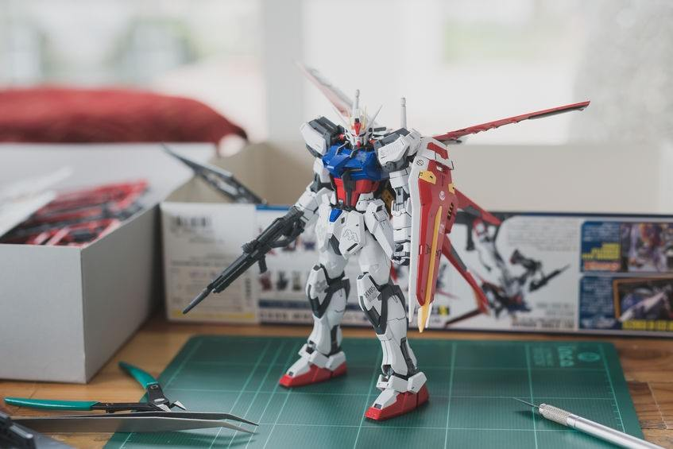

¿Qué es un Gunpla?
 También conocidos como “Gundam Plastic” o simplemente “Gundam”, los gunpla comparten una gran área del mundo de plastimodelismo el cual envuelve el hobby de ensamblar maquetas plásticas (en su mayoría a escala) diferentes tipos de objetos que van desde aviones, barcos, automóviles, ciudades y hasta personajes. En este caso se trata de “Gundams” los cuales son originarios de la serie de televisión Mobile Suit Gundam del año 1979. Desde entonces y debido al éxito que tuvo el programa permitió expandir el concepto más allá de los televisores, los Gundam pudieron encontrar un mercado más allá de un juguete completamente ensamblado enfocarse en un público más abierto que disfrutaban del modelismo en sí.